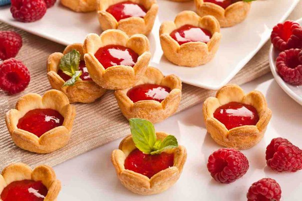

Пісочне тісто готується дуже легко і швидко з цілком доступних продуктів - борошна, олії, цукру та яєць. А торти, пироги і печива з нього виходять смачними, ніжними і розсипчастими завдяки тому, що містять багато жиру. Звідси і пісочне назва виробу.
Таке тісто - це основа багатьох десертів. Маючи в запасі перевірений рецепт пісочного тіста, можна придумати безліч варіантів його використання. Печиво, кошички зі свіжими ягодами або заварним кремом, тартинки з солодкою начинкою, коржі для торта - це лише кілька найпоширеніших десертів. А є ще чизкейки, де основа теж з пісочного тіста, і маса рецептів всіляких солодких пирогів.
Чим більше ви покладете масла під час проготування, тим більш розсипчастим буде готове печиво. Але в будь-якому випадку зміст масла не повинно бути більше 80% по відношенню до борошна. Якщо ви любите тверде печиво - скоротіть кількість масла до 150 грам. І ще - вибирайте хороше вершкове масло, без ароматизаторів і добавок - смак масла дуже відчувається в готовій випічці.
 Вершкове масло наріжте шматочками. Коли стане м'яким, з'єднайте масло з цукром і дрібкою солі, перемішайте до пастоподібної маси. Додайте жовтки або яйце. Якщо хочете щоб вийшло більш ніжне тісто - кладіть тільки жовтки. Просійте борошно прямо на стіл, зберіть її гіркою, в центрі зробіть поглиблення. Покладіть масляну суміш в середину, починайте потихеньку підсипати борошно з країв. Як тільки всі інгредієнти з'єднаються, розімніть тісто рази три-чотири як би розтираючи його по столу. І на цьому все. Довго місити не потрібно. У вас повинно вийти дуже м'яке тісто, і може здатися що потрібно б ще підсипати борошна. Цього робити ні в якому разі не можна - якщо переборщити з борошном, печиво буде жорстким, як підошва. Приберіть тісто на півгодини (мінімум) в холодильник. Там будуть йти певні процеси - інгредієнти «подружаться», клейковина борошна зміцніє і тісто можна буде без зусиль розкачати в пласт потрібної товщини. Можна заготовити тісто запас - в холодильнику воно може зберігатися тиждень, а в морозилці пролежить три місяці. Зазвичай пісочне тісто випікають при температурі 180 градусів, час випікання залежить від того, що ви печете. Наприклад, для печива достатньо 10 - 12 хвилин.
Ароматизоване пісочне тісто. Тут маса варіантів - в тісто можна додавати ваніль, ванільний екстракт, корицю, лимонну або апельсинову цедру або будь-які спеції за смаком. На вказану кількість тесту достатньо чайної ложечки спецій, додавати їх потрібно коли змішуєте масло з цукром
Бісквітне тісто - найніжніша основа для тортів. Легкий повітряний бісквіт використовують для формування великої кількості кондитерських виробів – це не тільки торт, а й тістечко, пироги, рулети. Поєднуючи бісквіт з кремом, фруктами і свіжими ягодами, желе, горіхами, глазур'ю, джемом можна отримати найрізноманітніші кондитерські вироби.
Це тісто давно вже стало найпопулярнішим у багатьох господинь за простоту приготування, невеликі витрати часу, пишність, ніжність, а найголовніше – чудовий смак. Бісквітна маса в своїй основі складається з яєць, цукру і борошна, збитих певним чином. Цим і пояснюється його легкість. Якість отриманих виробів залежить від температури інгредієнтів, свіжості яєць, правильного режиму випічки. Правильно пропечений бісквіт має характерну корочку і однорідну структуру. Бісквіт вигідно відрізняється від інших видів випічки тим, що готові напівфабрикати можна заморожувати. Свіжоприготовлений бісквіт погано ріжеться, нерівномірно просочується сиропом, тому спочатку його слід витримати не менше 8 годин. Крім основних інгредієнтів в тісто додають апельсинову цедру, ванілін або ванільний цукор, горіхи, родзинки, мак, какао та інші наповнювачі. Всі продукти повинні бути однакової температури, бажано низькою (холодний спосіб приготування бісквітного тіста). Ті ж вимоги пред'являються і до посуду – форма повинна бути холодною. Виняток становить теплий спосіб приготування бісквіта – коли яйця не діляться на білки і жовтки.
Для збивання білків потрібно вибирати абсолютно чисту і суху посуду, без слідів жиру та інших продуктів. При отриманні стійкої піни взбиваня припиняється, так як можуть утворитися зайві бульбашки, які осаджують тісто під час випікання. Жовток також збивається до зникнення крупинок цукру і утворення піни. В ідеалі білки і жовтки збивати потрібно одночасно, швидко змішати ці маси і додавати борошно, обережно перемішуючи, піднімаючи тісто шарами. Так в ньому залишається достатня кількість пухирців повітря. Якщо білки стали водянистими або погано збиваються, можна додати дрібку солі, кілька крапельок оцту або лимонної кислоти – вони будуть збивати набагато краще. Теплий спосіб передбачає змішування яйця повністю. Виходить бісквіт більш щільної структури, але при випічці він не опадає. Форму для випічки не можна заповнювати повністю, оскільки правильно підготовлене бісквітне тісто дуже сильно піднімається. Також ні в якому разі не відкривайте дверцята духовки перші 20-30 хвилин після того, як у неї була поставлена форма з майбутнім пирогом. Результатом вашої цікавості стане опалий і непропеченный коржик. Виймати бісквіт з форми потрібно наступним чином: краї майбутнього торта обводимо ножем, перевертаємо деко на тарілку або блюдо, трохи постукуємо. Якщо ж випічка прилипла, спробуйте поставити форму на рушник, змочений в гарячій воді; Бісквітне тісто може підніматися горбом посередині, це зовсім не означає, що рецепт не був дотриманий. Швидше всього, що ваша духовка не здатна забезпечити рівномірне прогрівання. Смачної вам випічки і солодких пирогів!
© Lviv Polytechnic National University - Marta Liushniak